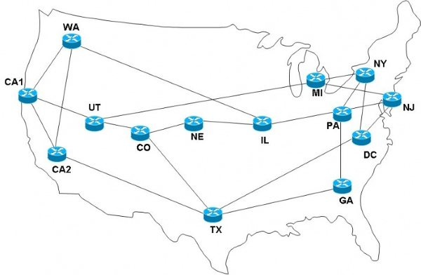
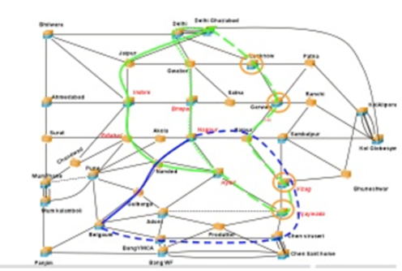
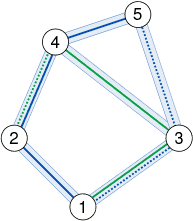
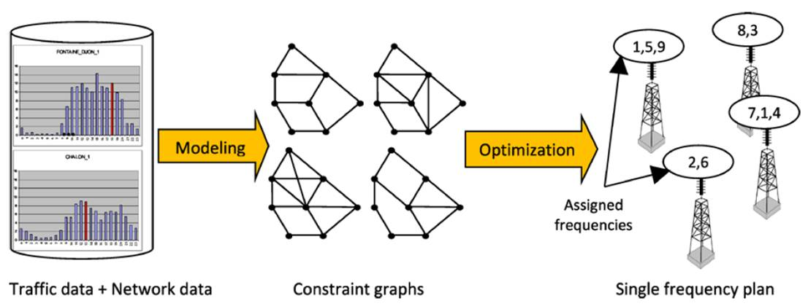
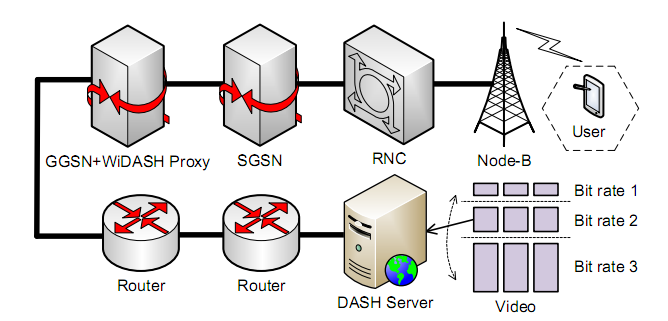

在过去的一个世纪里，通信对人类生活的各个方面产生了极其深远的影响。毫无疑问，通信领域的发展在本质上影响了人类从工业时代到信息时代的转变。几年前的科学神话如今都变为现实。据国际通信联盟（ITC）统计，全球电话线的数量从1995年的6.9亿条增加到2001年的10亿条。在二十多年前，个人无线通信仅限于少数的政府和军事机构所有。1983年，首个商业手机系统在美国诞生，而如今手机已遍布全球。
通信网络的设计、规划和运营过程中存在大量的复杂的优化问题。通信优化的目标就是通过规划和调度有限的网络资源以最小化网络成本并最大化服务质量（如带宽，速度，可靠性等）。通信网络的优化对于有效地利用网络资源，提高网络利用率和服务质量，节约成本起着至关重要的作用。在过去的几十年里，许多技术革新如信息数字化、光网络、互联网以及无线网不断涌现。这些通信技术的发展过程中出现了一系列具有挑战性的优化问题，如通信网络的规划和设计，路由，网络保护，预置共享，网络恢复，无线通信，网络选址和分配等。这些优化问题的成功求解对通信领域的发展和广泛应用起到了极大的推动作用。
目前，实验室承担了多项通信公司的优化调度合作科研项目。实验室主要在以下几个方面开展通信优化的研究工作：
如何提供超高速、无阻塞、高可靠、全智能的统一传送解决方案，融合WDM/OTN，实现海量带宽，瞬间可达是光网络领域的核心问题之一。给定光网络的物理拓扑和实际的用户需求，光网络规划的Grooming问题主要研究如何规划出满足上层用户需求和下层物理路由约束的虚拓扑网络，并使得建网成本最小。虚拓扑网络的边的数目直接决定了建网成本，因为一条边对应两个OTU单板，而这是光网络中电层的主要成本。该问题属于拓扑优化问题。我们设计了高效的启发式算法对该问题进行快速求解，通过统一虚拓扑变幻、业务选择OCH路由、OCH选择OMS路由等技术手段，设计了一种高效率的局部搜索算法。算法效率要优于目前业界最好算法。

在基于Mesh WDM光网络Grooming规划中，除了考虑建网成本外，还要求传输网络的可靠性尽量地高。因此，在传输业务时，不仅要为业务选择传输的工作路由，还要考虑为其分配保护路由或预置路由，以使得网络具有很好的弹性，能够抗一次或多次故障。WDM光网络的预置共享问题就是在考虑业务路由的同时要考虑其备用方案，在此前提下要尽量使建网成本低。由于Grooming规划问题本身已经非常复杂，考虑备用路径后的问题就变得异常复杂，其求解难度也大大增加。我们设计的算法可以很好地适应抗一次和二次故障的前提下使建网成本尽可能地低。

在基于Mesh WDM光网络Grooming规划中，当为业务分配路由后，还需要考虑为业务分配波长。该问题称为路由和波长分配问题。当业务的OMS路由确定后，为每个业务分配波长实际上是一个图着色问题，即使得任意两个经过同一物理链路的业务分配不同的波长。

频率分配问题是广播网络如无线手机网络中的核心问题，在军事中也有广泛的应用。按实时性可分为动态频率分配问题和静态频率分配问题。对于给定有限的频谱资源，频率分配问题要求根据小区的流量给每个小区分配一定的频谱，并使得同小区和相邻小区内用户分配的频谱满足一定的约束条件。其目的是在满足所有用户需求的情况下使所使用的频谱尽量地少，或者在给定频谱的前提下使整个网络的串扰尽量地小或被拒绝接入的用户数尽量地少。

4G手机无线网络中的流媒体传输是一个关键技术问题，也是业界大公司如苹果、微软、思科等都特别关注的一个核心问题。它主要考虑两个模式：网关模式和RNC模式。该问题主要研究如何根据网络状况自适应地对多用户的流媒体资源进行调度，以提高流媒体传输的流畅性和可靠性。

地址：中国·湖北省·武汉市·珞喻路1037号·华中科技大学南一楼四楼 邮编：430074 联系电话：027-87543885 登陆入口
本网站由yechao开发维护，如有问题，邮件至 Email: ye_hust@sina.com